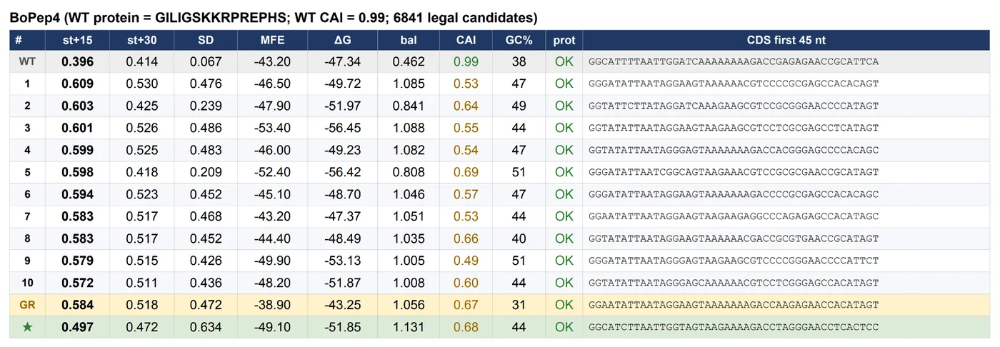
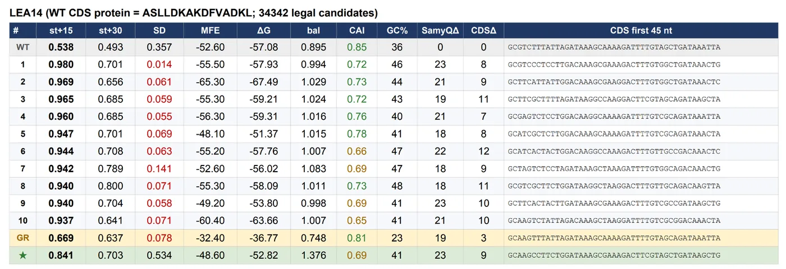
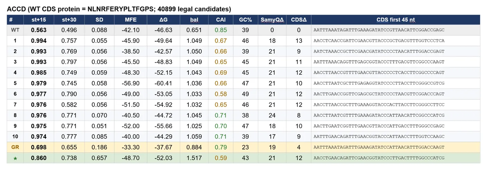
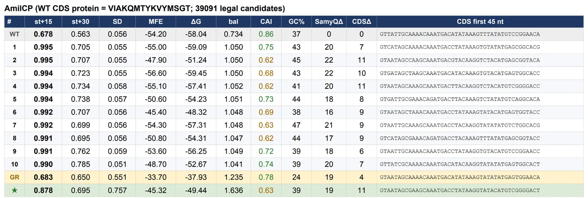
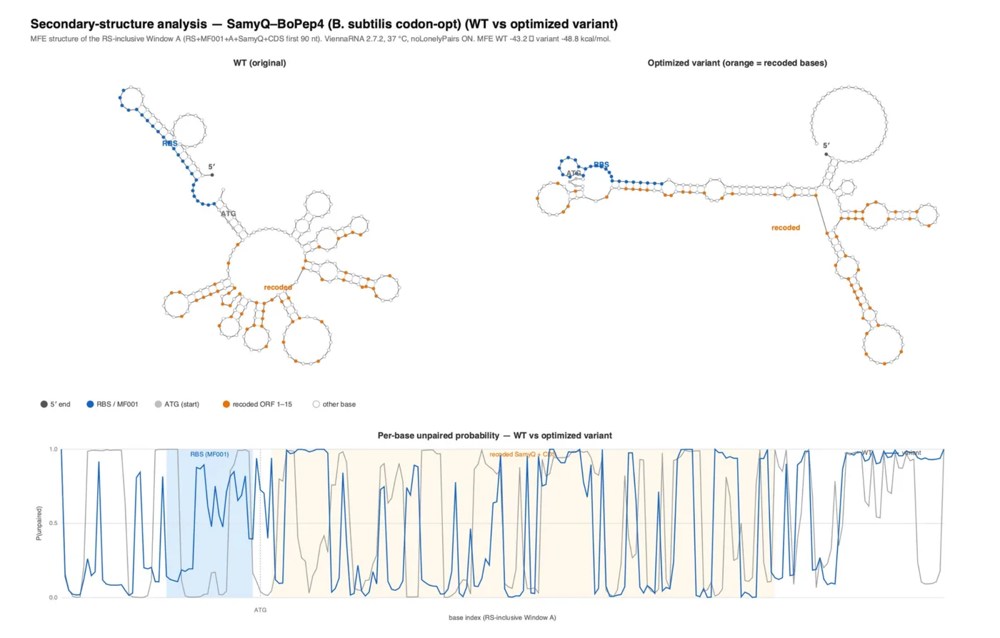
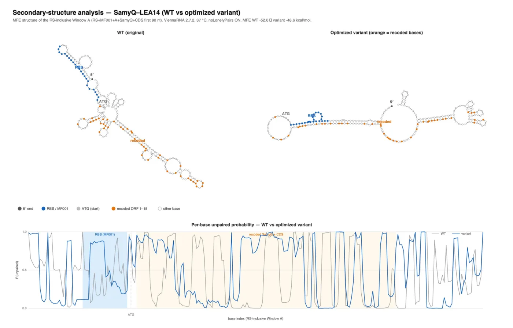
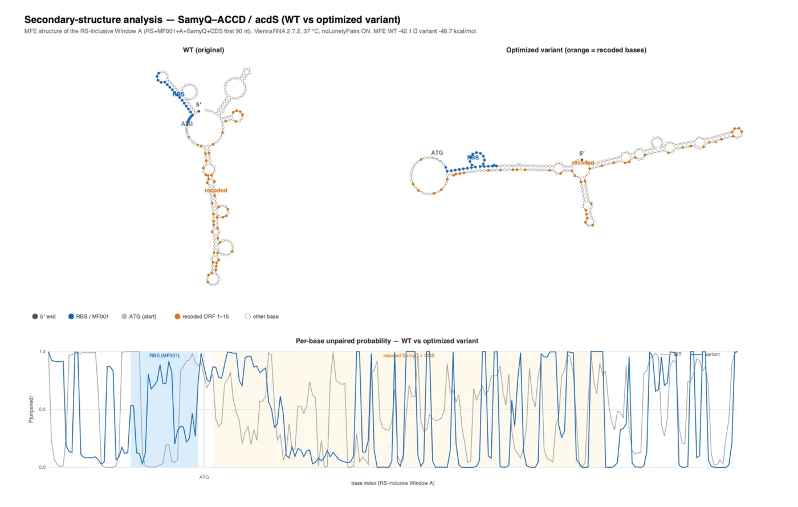
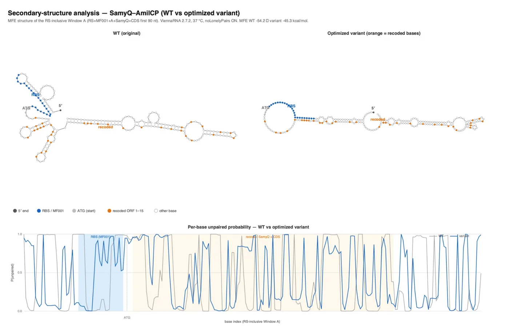

Methodology
Introduction
Background
Computational tools can provide great insights into protein engineering whilst acting as key decision-making engines for wet lab work, but the process can be oversimplified with convenient rather than thorough analysis of inputs and outputs, and the lack of a project-integrated, tailored methodology.
The outputs of these tools are highly dependent on the quality of inputs, parameters, and underlying assumptions. This problem is aggravated when it comes to simulating the behavior of short, disordered peptides such as Brassica oleracea Plant Elicitor Peptide 4 (BoPEP4), one of our three protectants, among Late Embryogenesis Abundant protein 14 (LEA14), 1-aminocyclopropane-1-carboxylate deaminase (ACC D). A successful protein engineering workflow requires not only utilizing computational methods, but also understanding how and why these tools generate their predictions.
Our docking methodology aims to predict and evaluate the formation of the ternary signaling complex consisting of the plasma membrane receptor-like kinase PEPR1, the co-receptor kinase BAK1, and the Brassica-derived peptide ligand BoPEP4. Addressing the challenges associated with interpreting computational predictions, we designed our workflow based on the principles of integrative structural biology established by Alexandre Bonvin, Professor of Computational Structural Biology at Utrecht University. His research on computational approaches for the characterization of biomolecular interactions and the development of various Bonvin Lab software tools provided the foundation for our protein design strategy.
In the following sections, we aim to justify the process we used to choose our protectants, the preparation which went into the creation of docking inputs, the use of the HADDOCK 2.4 docking software, and the compilation of finalized evidence via evaluation tools and modeling, strengthening evidence through the OpenMM Molecular Dynamics tool ran on Google Colab.

Generate: evidence and design
Choosing the protectants
The PEP family
In the process of selecting protectants, we came across the BoPROPEP family tree, identifying valuable candidate PEP peptides; including BoPEP4, AtPEP1, and AtPEP3. This information led us to identify a family tree across various species, including Brassica, letting us place candidates like BoPEP4 in relation to Arabidopsis rather than utilizing the peptide directly from the plant.
By understanding this evolutionary framing, it allowed us to select the most optimal family with a shared ancestry, who have the tendency to share the same underlying molecular concepts, even when specific triggers may vary. The PEP-family peptides have been perceived by the same pair of receptor kinases (PEPR1 and PEPR2), and the binding of AtPEPs to these receptors is functionally important for the immune response in Arabidopsis. As a result, this receptor recognition mechanism is conserved across the family, making it a reasonable first signal for which candidates are likely to behave similarly; narrowing our list of optimal protectants before any experiments.
Why BoPEP4 over AtPEP1?
We focused particularly on BoPEP4, while using the better-characterized, receptor interaction verified, Arabidopsis thaliana Pep system as a structural and functional reference.
Rather than assuming that the most extensively characterized Arabidopsis peptide AtPEP1 would automatically be the optimal engineering target, we examined its various features and characteristics before making a decision. AtPEP1 primarily was known to combat biotic stress, while our project direction looked for a peptide that could combat measurable abiotic stress, an issue well detected by weather data, sensors, dissimilar to the detection of living things. Additionally, drought stress, which after analysis was proven to be prominent in Taiwan, was directly signalled by BoPEP4, increasing its value in the project. This focus on abiotic stress also allows us to evaluate the protectant through direct plant phenotypes, such as root length and biomass. By comparison, assays for biotic stress would require characterization of interactions between the plant and another living organism, introducing additional variables that make the protectant's effects more difficult to isolate and quantify.
Lastly, the comparatively variable N-terminal region of BoPEP4, alongside its highly conserved C-terminal PEP motif (SSG-x2-G-x2-N), provides an opportunity for targeted N-terminal mutations while preserving the conserved core of PEP activity. Using the relatively less-studied BoPEP4 as our starting scaffold further allows us to investigate previously less-characterized sequence variants.
The LEA family
We applied a similar comparative approach to the LEA (Late embryogenesis abundant) protein/peptide family, but the analysis required a different structural perspective. LEA proteins are commonly associated with abiotic-stress responses and can exhibit substantial intrinsic disorder. Unlike compact globular proteins, some LEA proteins can lack a single stable three-dimensional structure under normal conditions and may adopt different conformations depending on their environment or binding partners.
We therefore distinguished between ordered/globular proteins and intrinsically disordered LEA proteins (IDPs) when considering computational modeling. This distinction was important because mutation methods designed for stable folded proteins cannot necessarily be interpreted in the same way for highly disordered peptides, while both types of molecules exist in the LEA family.
Of the molecules in the LEA family, we selected the ordered/globular protein LEA14, with its demonstrated protection against drought, salinity, and osmotic stress. Firstly, we aimed to select an ordered protein because LEA14's defined three-dimensional structure provides a stable scaffold for protein-protein interactions involved in molecular stabilization. Unlike BoPEP4, whose function depends on highly specific recognition of the PEPR receptor and the BAK1 co-receptor, LEA14 does not rely on recognition of a single dedicated receptor to exert its protective effects. Instead, its stabilization function can involve interactions with various cellular proteins, making a larger, structured protein better suited to investigating how structural features influence molecular protection under abiotic stress. On the contrary, an intrinsically disordered LEA could exert broader, less target-specific protective effects through molecular-shield mechanisms. We therefore selected the ordered LEA14, whose defined structure provides a more suitable basis for investigating specific protein-protein interactions involved in molecular stabilization.
Second, similar to BoPEP4, LEA14’s effects on drought/osmotic and salt-stress protection provides a measurable phenotype for wet lab testing. Lastly, LEA14 provides a fundamentally different protein-design problem from the short receptor-binding BoPEP4 peptide, where its 150+ aa length provides vast opportunities for mutations, as compared to a shorter peptide, whose specificity depends on its receptor.
ACC deaminase
After an interview and discussion with Stanford Bioengineering assistant professor Jenn Brophy, she suggested a third protectant molecule we could focus on: ACC Deaminase. Significantly, her ACC D recommendation was scoped towards drought and heat, not confirmed for salinity specifically, and she did not make a direct claim about ACC D's effectiveness under salinity stress. This was beneficial, as both LEA14 and BoPEP4 fail to combat one of Taiwan's largest abiotic environmental stresses: heat stress.
Additionally, the protectant is mostly specific to ACC (1-Aminocyclopropane-1-carboxylic acid), a commonly found non-protein amino acid that serves as the direct chemical precursor to the plant growth hormone ethylene. With the protein acting on this vital plant signaling molecule, its regulatory effects can reduce stress-induced ethylene accumulation and thereby alleviate the growth inhibition associated with environmental stress without directly interfering with other cellular molecules. Lastly, ACC D functions inside plant cells and outside the plant roots, providing a variety of protectant application methods. As a result, our third protectant choice, ACC D, filled in crucial gaps in our stress-relieving protectant array while providing flexibility in usage and application.
Trehalose, proline and CAP peptides
Several other well-established osmoprotectants and stress peptides were considered and ultimately excluded from our protectant shortlist. Trehalose was set aside despite its established role in osmotic stress tolerance, since it is already a widely studied and heavily engineered compatible solute in synthetic biology, offering little novel contribution and less differentiation for our project. Proline, while a classic plant osmoprotectant, was excluded because excessive proline accumulation has been associated with cytotoxic effects rather than purely protective ones, making it a riskier choice for a system designed to continuously produce protectant on demand. CAP-derived peptides (CAPE) were also considered, given their documented role in salinity stress response, but were deprioritized due to the practical timeline of peptide supply and characterization: the synthesis and validation process was judged too slow to fit within our project's development window compared to faster-to-produce alternatives.
Literature: understanding the mechanism
We therefore reviewed structural and experimental literature to determine the mechanisms behind protein interaction. This would better refine our protectant application and design strategy.
Tang et al. the peptide binds extended, so it cannot be docked as one rigid shape
Tang et al. provided an important structural reference for the interaction between AtPEP1 and its receptor. The reported structure showed how the peptide adopts an extended binding conformation within the receptor complex.
This was particularly important for our modeling strategy because a peptide should not necessarily be represented as a single rigid structure. Instead, its possible conformational states need to be considered before docking.
The structural information from Tang et al. therefore informed both our peptide conformer generation and our interpretation of the receptor-binding interface.
Yu et al. which sequence changes are worth making at all
We also reviewed Yu et al. to examine broader strategies for designing and engineering plant-derived peptides. This literature helped contextualize our engineering axes and supported the use of sequence modifications such as truncation and residue substitution as exploratory approaches.
Rather than treating every mutation as equally informative, we used the literature to identify modifications that could produce interpretable changes in peptide sequence or structure.
Pearce et al. 2008 the truncation series and the alanine scan came from here
Pearce et al. provided the basis for several of our experimental design concepts. In particular, the study motivated the use of systematic peptide modification approaches to investigate which residues or regions contribute to activity.
Truncation series
A truncation series progressively removes portions of a peptide sequence. By comparing variants of different lengths, we can investigate whether a particular region is necessary for the expected interaction.
For our workflow, truncation was therefore treated as both an engineering strategy and a mechanistic probe.
Alanine scan
Alanine scanning provides a systematic approach for evaluating individual residues. Selected residues are replaced with alanine while maintaining a relatively simple side chain.
The purpose is not simply to create “better” peptides. Instead, individual substitutions can help identify residues whose side-chain properties may be important for receptor recognition or structural stability.
Together, truncation and alanine scanning provided a conceptual foundation for our later mutation-design workflow.
Interviews
Dr. Brophy
After interviewing Dr. Brophy, a Stanford assistant professor working in Bioengineering to uncover mechanisms of environmental stress resilience, suggested lots of factors we took into consideration for our project, specifically covering ACC Deaminase. When asked how to apply the logic of stress sensors and protectant synthesis for plants to tolerate heat and salinity, Dr. Brophy's response recommended OR-gate architecture. This broad guidance on gate selection was to work backward from the application needs, as we should “select a logic gate that is activated under the conditions you care about” rather than starting from circuit design first, she pointed towards researching 2 and 3 input logic gates in E. coli as a resource for identifying which combinations of architecture would fit.
Significantly, her ACC Deaminase recommendation was scoped towards drought and heat, not confirmed for salinity specifically, and she did not make a direct claim about ACC deaminase's effectiveness under salinity stress. Thus, we followed with further research into the OR-gate suggesting extending to both heat and salinity.
Protectant families: sequence alignment
After identifying our candidate protectants, we compared their sequences and structural characteristics to determine which analyses could provide useful engineering information. Because ReLeaf ultimately produces the protectants through engineered Bacillus subtilis, sequence-level analysis provided an initial way to evaluate conservation, variability, and potential engineering sites before moving into structural modeling.
Pep sequence alignment
Multiple AtPep sequences were aligned to identify shared amino acids and conserved sequence patterns. The alignment was used as a qualitative guide for distinguishing potentially functionally constrained regions from more variable regions.
We then compared these patterns with BoPEP4. Conserved residues shared between BoPEP4 and characterized AtPEPs were treated as features worth preserving during engineering, while sequence differences provided candidate positions for subsequent mutation and truncation experiments.
This analysis was particularly relevant because PEP activity depends on a short receptor-binding sequence. The AtPEP1-PEPR1 structure provides a structural context for interpreting these conserved residues, especially within the C-terminal region that makes concentrated receptor contacts.
Sequence comparison therefore served as a bridge between natural sequence diversity and rational engineering: conserved regions suggested features to protect, while variable regions suggested positions where sequence modifications could be explored.
BoPEP4 alignment findings
BoPEP4 and AtPEP1 are both 23 residues and align without gaps, so every position has a direct counterpart and residue numbering transfers one to one. This is what allows the AtPEP1 structural data to be read onto BoPEP4 at all.
Ten positions are identical to AtPEP1: 7, 9, 12, 15, 16, 17, 19, 20, 22 and 23. All ten fall in the C-terminal region. Identity across the full peptide is 10 of 23, within residues 7 to 23 it is 10 of 17, and across residues 1 to 6 it is zero. That boundary matters, because an independent method draws it in the same place. The 5GR8 crystal resolves AtPEP1 only from residue 7 onward, and our contact analysis found that both PEPR1 and PEPR2 engage residues 7 to 23 while the first six make no receptor contact.
BoPEP4 also conforms to the conserved PEP motif SSG-x2-G-x2-N (Wang et al., 2022), which occupies positions 15 to 23. Ser15, Ser16, Gly17, Gly20 and Asn23 are all present. The two positions where BoPEP4 differs from AtPEP1 inside this window, 18 and 21, both fall in the motif's degenerate positions. The peptide satisfies the family's recognition signature and differs only where the family itself permits variation.
The N-terminal divergence is chemical as well as positional. AtPEP1 opens with ATKVKA, which is charged; BoPEP4 opens with GILIGS, which is uncharged and hydrophobic. The whole segment differs in character rather than at scattered positions.
For engineering, the alignment defines a candidate set: positions inside the contact region where BoPEP4 differs from the structurally characterised peptide. Position 18 carries lysine against AtPEP1's arginine, and position 8 carries lysine against glutamine, which are the bases for K18R and K8Q. The alignment identifies these positions without ranking them, since sequence comparison alone cannot separate a position that varies because it is unimportant from one where two peptides solve the same problem differently. That ranking came from the alanine scan, which identified the degenerate positions.
Across the three engineering axes, the alignment fixed a starting point for each. Truncation at the N-terminus is supported by two independent lines, zero conservation and zero receptor contact across residues 1 to 6. Point substitution has a defined candidate set inside residues 7 to 23. The conserved repeat analysis has a defined unit in the motif region at 15 to 23.
Why not a LEA14 sequence alignment?
We did not apply the same family-wide alignment strategy to LEA14 because sequence conservation alone was less informative for the engineering questions we were asking. The LEA family contains substantial structural diversity, including intrinsically disordered proteins and more structured members, meaning that similar sequence patterns do not necessarily correspond to equivalent structural or functional roles across the family.
Instead, LEA14 was analyzed as a specific folded protein. We prioritized its experimentally characterized structure, residue environment, potential interaction surfaces, and vulnerabilities associated with our delivery route. This approach allowed us to connect each proposed mutation to a defined structural hypothesis.
Thus, the two protectants required different forms of sequence analysis: BoPEP4 was compared across homologous peptides to identify conserved receptor-binding features, while LEA14 was analyzed within its own three-dimensional structural context to identify engineering liabilities and opportunities.
Engineering axes
Truncations
After running a truncation ladder with HADDOCK 2.4 (see Sprints and Results), we made several remarkable discoveries and gained new insights. Firstly, the uncharged 6-aa “GILIGS” sequence in BoPEP4, when removed, did not affect the HADDOCK score much. Based on HADDOCK 2.4's CAPRI assessed HADDOCK score (see Triage), when compared, BoPEP4 WT and BoPEP4 Δ1-6 (residues 7 to 23) had docking scores varying within 20 units of each other when the protectant was docked to PEPR1 and PEPR2. Δ1-8 and neighbouring cuts behaved the same way, with the score cliff appearing only at deeper truncations. The plateau told us which residues could be removed without paying an affinity cost, and the cliff told us where to stop, which is how we arrived at the shortest construct that still binds.
Second, fewer residues to synthesise and export implies a faster secretion rate, so the plateau is the region where we gain manufacturability without giving up binding. The Wet Lab team took this on as a testable claim and is measuring secretion for the truncated constructs against the wild type, since a protectant that binds well but leaves the cell slowly does not help a bioreactor. Overall, this supports our engineering strategy of minimizing BoPEP4 while preserving its predicted receptor-binding capability, with the resulting reduction in peptide length providing a potential manufacturability advantage that can be tested experimentally through secretion assays.
Point substitutions
The decision to focus on point mutations stemmed from the concept that BoPEP4 amino acids that were not in contact with receptor PEPR1 could potentially be swapped with amino acids in the same position on AtPEP1, restoring residues present in the literature-backed 5GR8 protein database structure. This concept came after a BLAST analysis of PEP family peptides, which made us realize that experimenting
After sequence alignment analysis, we determined that point mutations could be beneficial for both docking affinity and secretion of the peptide. We proved this via HADDOCK; K18 could use a tighter three point anchor to PEPR1, while K8 could be modified to make the peptide more protease resistant, optimizing secretion.
As a result, we decided on K18R and K8Q. K18R would replicate the R18 on AtPEP1, while K8Q would replicate Q8. With the alanine scan results, we are told the K18 is load-bearing, where we would focus on docking affinity, while K8 could be edited to serve purported secretion benefits, where removing the positive charge from the lysine could protect the peptide bonds of the protectant in the protease-rich B. subtilis.
Conserved repeats
Based on BLAST scans, we realized the conserved region (15 to 23) of BoPEP4 likely suggested optimal binding with the receptor. Based on this, we ran a tandem repeat analysis. From this, we saw a rise in HADDOCK score across repeats. However, we also considered the possibility of the protectant gradually becoming less active-site specific, as the peptide was lengthened to fill other gaps and parts of the PEPR1 receptor.
Point substitution
Our substitutions address liabilities we identified in the sequence rather than contacts at a binding interface. Each one was chosen because a specific structural feature predicts a specific failure mode in our delivery route, and because the prediction is testable in our own lab.
LEA14 contains a single cysteine, Cys58, at the start of β3, with no partner to pair with. In the reducing plant cytosol an unpaired thiol is inert, but our route sends the protein through the oxidising extracellular compartment, where it can form intermolecular disulfides and dimerise. C58S substitutes a serine of almost identical size that cannot do this. The test is a gel run with and without a reducing agent, so the hypothesis fails visibly if the paired band persists.
The sequence also contains exactly one Asp-Pro bond, at positions 78 and 79. This is the most acid-labile peptide bond type, and it matters only if the reservoir or formulation becomes acidic or is heated. D78E removes it while preserving the negative charge at that position. This one is insurance against a process condition rather than a gain in activity, and we treated it as such when ranking.
A third group of substitutions targets the flexible N-terminal extension at residues 2 to 19. Helical wheel analysis gives that segment a hydrophobic moment of about 0.37, which is periodic but below the range characteristic of membrane-binding amphipathic helices. Face-consistent substitutions on the polar and hydrophobic faces would raise it into that range and could turn a flexible tail into a membrane anchor. We record this as a hypothesis rather than a prediction, and we built the N-terminal truncation as its matched negative control, which is part of why that truncation is worth making even if it changes nothing on its own.
We deliberately did not pursue surface hydrophilicity substitutions. LEA14’s GRAVY value of +0.056 is unusual for a stress-protective protein and could be lowered, but doing so would work against the fold, and the bulk hydration shielding mechanism those substitutions would serve is the mechanism our feasibility analysis argues is not available at any deliverable concentration.
K-segment translocation
LEA14 belongs to the atypical, folded LEA_2 group and carries none of the repeat motifs that characterise the disordered LEA groups. The K-segment is the best-characterised membrane-protection module in the family, and it occurs in dehydrins, not here. The design fuses one or two K-segments, or Group 3 LEA 11-mer repeats, onto the folded LEA14 core, producing a hybrid of a stable scaffold with a disordered arm.
The rationale rests on a documented precedent. The mitochondrial LEA protein LEAM is disordered in solution and folds into an amphipathic helix that binds and stabilises membranes as the cell dries. If that behaviour is carried by the motif rather than by the whole protein, grafting the motif onto a different scaffold should carry the behaviour with it.
Design work for this axis runs on helical wheel analysis, maximising the hydrophobic moment of the grafted segment while holding net charge and total hydrophobicity inside the range observed in natural membrane-binding LEA segments. This is the same analysis that governs the N-terminal amphipathicity substitutions above, which is why the two axes were designed together.
Two constraints bound the graft. Added mass reduces the fraction of applied protein that crosses the cell wall, and every fusion junction is a new site to audit for degron compliance and protease susceptibility. Both are checked computationally before any construct is cloned.
Truncations
The published solution structure defines residues 24 to 145. The first 23 residues have no fixed conformation in the ensemble, and they are the region a protease is most likely to attack first. Removing them serves three purposes at once. It removes the most exposed proteolytic target, it lowers the mass and hydrodynamic radius, which matters because our limiting step is the fraction of applied protein that crosses the cell wall and plasma membrane, and it leaves the folded β-sandwich core intact so the published function should be preserved.
The truncation also does a second job in the panel. It is the negative control for the amphipathicity hypothesis above. If enhancing the N-terminal helix improves membrane interaction, removing that same region should do the opposite, and the two constructs read against each other.
The test is a protease challenge: add trypsin, sample over time, and compare how quickly the full-length and truncated bands disappear. Results are reported in Sprints and Results.
Structure and docking prep
Peptide conformer ensemble
In order to obtain the structural input of BoPEP4 for docking runs, we observed various qualities of the disordered peptide and indicators of likely peptide orientation. We based our inputs on two factors: 5GR8, the wwPDB crystal structure of PEPR1-AtPEP1; and Alphafold, the AI system developed by Google DeepMind that predicts the 3D structure of proteins from their amino acid sequences. Firstly, 5GR8 confirmed the extended conformation of AtPEP1, and how it binds to the inner surface of the superhelical PEPR1LRR receptor. With this, we made the inference that BoPEP4, from the same PEP family of DAMPs, could have a similar extended molecular structure when bound to PEPR1. We generated these structures via AlphaFold3, which were cross checked with 5GR8, and later used in our docking inputs. Additionally, we compared our runs to 5GR8, which was used as our docking control group.
Receptor and co-receptor structures
We identified a total of two receptors and one co-receptor in the BoPEP4 signalling complex. Firstly, PEPR1, a plant leucine-rich repeat receptor-like kinase (LRR-RK) found in Arabidopsis thaliana that acts as an innate immunity pattern recognition receptor, has an extracellular domain outlined in wwPDB structure 5GR8, chain A, which we used as our docking receptor structure input.
Given the structural similarity between PEPR1 and PEPR2, we considered PEPR2 as an alternative receptor. Although PEPR2 is more specific toward AtPep ligands, whereas PEPR1 exhibits broader Pep recognition, we generated a PEPR2 structure using both AlphaFold3 and homology modeling through SWISS-MODEL, using PEPR1 as a structural reference. However, due to the greater structural confidence and availability of experimentally resolved structural information for PEPR1, we selected PEPR1 as the primary receptor for our docking simulations and used PEPR2 primarily as a complementary model.
Furthermore, the structure of the co-receptor BAK1 was obtained via the 4MN8 PDB structure, chain B. 4MN8 is the crystal structure of the plant immune receptor complex containing the leucine-rich repeat (LRR) ectodomains of FLS2 and BAK1 bound to the bacterial flagellin epitope flg22. We used this BAK1 structure because, at the molecular level, BAK1 functions as a shared LRR co-receptor for multiple plant immune receptors, including PEPRs. Its conserved LRR ectodomain provides the structural framework for receptor-co-receptor association, allowing the experimentally resolved BAK1 structure from 4MN8 to serve as a structural model for its participation in the PEPR1-BoPEP4 complex. Thus, while 4MN8 does not contain PEPR1, its resolved BAK1 ectodomain can be used as a structural input based on the conserved molecular architecture of BAK1-mediated receptor complex formation.
Receptor restraint mapping
Receptor restraints, particularly in HADDOCK docking, serve as markers for amino acids expected to participate in molecular interactions, constraining the search toward interfaces that are both physically and biologically plausible. Given the limited and heterogeneous evidence available for the molecular structures within our complex, we employed a rigorous cross-validation workflow across multiple computational tools to identify and corroborate potential interaction residues before incorporating them as docking restraints.
MUSCLE alignment and WHISCY 352 homologues, and a blind predictor that recovered 1 of 41
To supply WHISCY with evolutionary information for PEPR1, we collected homologues by BLAST and aligned 352 sequences with MUSCLE. WHISCY weights each surface residue by conservation across the alignment, on the reasoning that conserved solvent-exposed patches are more likely to be functional interfaces. We ran WHISCY both with and without this alignment so that the effect of the evolutionary input could be seen rather than assumed.
Our primary PEPR1 restraint set is contact-derived from the 5GR8 co-crystal. We scanned every PEPR1 heavy atom against every AtPEP1 heavy atom at a 4.5 Å cutoff, across both crystallographic copies of the complex (chains A/J and D/P), and took the union. This gave 41 active residues covering most of the concave LRR face. Passive residues were defined as solvent-exposed positions (relative SASA ≥ 0.40, Shrake-Rupley) with a Cα within 8 Å of an active residue, giving 9. The passive set is thin because the active interface is unusually extensive, which is expected for an LRR domain that wraps its ligand along most of its length.
The same scan independently confirmed the anchor contact reported by Tang et al. (2015): PEPR1 Arg487 forms a salt bridge with the C-terminal carboxylate of AtPEP1 Asn23 at 2.40 Å and 2.59 Å in the two copies. Arg491 sits further out at roughly 5 Å, consistent with a real but secondary or water-mediated contact.
On the peptide side, the contact scan returned 16 of the 17 resolved AtPEP1 residues. We treated the peptide as fully active, which is standard practice for a short linear ligand entirely enclosed in a receptor groove.
To test the receptor list against an independent method, we ran WHISCY on PEPR1 alone, blind to the peptide, once without the alignment and once with the 352-sequence MSA. The active tiers recovered little of the crystal interface: 1 of 41 and 2 of 41 respectively. The two WHISCY runs also agreed with each other on only one residue, so we did not treat the active tier as a reliable independent check. The passive tier behaved differently. Both runs returned the same six crystal-contact residues regardless of whether evolutionary information was supplied.
Taking the tiers together, seven residues (347, 348, 369, 371, 372, 393, 395) appear in the crystal contacts and in both WHISCY runs. We kept all 41 crystal-derived residues as active restraints and flagged these seven internally as the highest-confidence core. Residues predicted by WHISCY alone were recorded but not added to the restraint set, since single blind predictors of this class recover roughly a third of true interface residues in benchmark conditions and a partial miss against a 41-residue epitope is within normal behaviour for the tool.
For PEPR2 we transferred the PEPR1 lists by pairwise sequence alignment, giving 39 active and 9 passive residues. 21 of the 41 PEPR1 active residues (51%) are identical in PEPR2. One substitution is worth recording: PEPR1 Arg487, the primary anchor, is conserved as Arg464, while the secondary Arg491 is charge-reversed to Glu468. The core anchoring interaction is therefore likely to transfer, while the surrounding contact geometry may not. These lists are a starting hypothesis for the homology model rather than a validated restraint set.
US-align: the BAK1 interface, by analogy with FLS2 TM-score 0.840 where sequence identity is only 28%
No structure of PEPR1 bound to BAK1 exists, so the co-receptor interface had to be predicted by structural analogy with FLS2, whose BAK1 complex is resolved in 4MN8.
FLS2 and PEPR1 share only 28% sequence identity, which is too low for reliable sequence-based transfer. US-align returned a TM-score of 0.840 between them, well above the 0.5 threshold for the same fold, confirming that the LRR architecture is shared even where the sequence is not. We read residue-to-residue equivalences directly from the US-align alignment block rather than approximating by nearest neighbour, then mapped FLS2's BAK1-contact residues (25 positions read from 4MN8 coordinates) onto PEPR1. This produced 23 predicted BAK1-site residues on PEPR1: 372, 395, 486, 509, 510, 512, 533, 534, 555, 557, 558, 581, 603, 605, 627, 629, 652, 654, 675, 676, 678, 698, 700.
An initial placement that rotated the whole BAK1 domain onto PEPR1 produced a physically impossible intertwined model. We corrected it with a local Kabsch refit restricted to the matched interface residues, which brought interface RMSD from 4.00 Å to 2.09 Å and raised plausible contact pairs from 61 to 95.
Two of the 23 residues, 372 and 395, fall inside the seven-residue peptide-interface core from the WHISCY comparison, and several others sit within a few residues of the 487/489/491 region. In the FLS2 system, flg22's C-terminal region and BAK1's footprint on FLS2 are structurally adjacent, with the ligand forming part of the composite surface BAK1 clamps onto. If PEPR1 follows the same architecture, this adjacency is what would be expected. We report it as consistent with the known biology rather than as evidence for it, since it could also reflect the geometric transfer landing generically nearby.
On the BAK1 side, the restraints are contact-derived from 4MN8: 24 active and 4 passive residues, comprising BAK1's contacts with FLS2 (22 residues) and with flg22 (4 residues), where Val54 and Thr58 are shared between both. We had expected Koller and Bent (2014) to provide a second, conservation-based line of support for a generalisable SERK docking signature. On reading the paper in full, we found it reports the opposite: the conserved C-terminal cluster it identifies was tested by mutagenesis and did not impair FLS2-BAK1 interaction, and the paper concludes that FLS2 and BRI1 use receptor-specific docking sites. The BAK1-side restraints therefore rest on a single line of evidence, the 4MN8 structural transfer, and we weighted them as homology-inferred and single-source when interpreting the docking output.
DisVis: is the restraint set geometrically possible at all? a positive control with a known answer, and the actual test
Before committing to full HADDOCK runs, we used DisVis to test whether each restraint set describes a geometrically possible arrangement at all. DisVis performs a six-dimensional scan of every rigid-body placement of one partner around the other and reports how many restraints can be satisfied simultaneously at each sampled position, along with the volume of accessible interaction space. Each line in a DisVis restraint file is independent, with no OR grouping of the kind HADDOCK's ambiguous restraints use, so a broad active-residue set is not expected to be fully satisfiable at once. What matters is how much of the restraint set and how much physical space stay consistent, measured against a case where the answer is known.
Because we had active residue lists rather than specific known residue pairs, we generated the full combinatorial matrix for each run: every active residue on one side against every active residue on the other, as Cα to Cα distances bounded at 2.0 to 8.0 Å. The lower bound avoids an impossible clash and the upper bound is a standard contact-map threshold.
Run 1, PEPR1 against AtPEP1 (656 restraints, 41 × 16) is the positive control. The pair is drawn from a solved co-crystal and is known to bind in that geometry, so this run calibrates what a true interface looks like under this restraint-generation scheme.
Run 2, PEPR1 against BAK1 (552 restraints, 23 × 24) is the actual test. Here the PEPR1 side is the US-align homology transfer and the BAK1 side is the 4MN8 contact list. The two were derived independently and had never been tested for mutual compatibility. If Run 2 returns results on a similar scale to Run 1, the inferred interface is at least geometrically coherent. If it returns substantially fewer consistent restraints and far less accessible space, that is a signal the homology transfer implies an arrangement the structures cannot adopt.
Contact-derived restraints from the crystal structures the reference poses that let models be judged on structure, not score
Structural superposition gave us reference geometry for each binary interface, which is what let us judge docked models on structure rather than on HADDOCK score alone.
For the peptide interface, we threaded BoPEP4 onto the AtPEP1 backbone from 5GR8 chain J. The gapless alignment means every position has a direct counterpart and the numbering carries over one to one. The threaded model reproduces the native AtPEP1 interface with fnat 0.974, so it serves as the reference pose for BoPEP4 in the receptor groove. We assessed our binary BoPEP4-PEPR1 HADDOCK runs against it by fraction of native contacts recovered, and checked whether each model retained the conserved C-terminal anchor between Asn23 and PEPR1 Arg487, Asp441 and Asn465.
For the co-receptor interface, we superimposed FLS2 (4MN8 chain A) onto PEPR1 along the LRR β-ladder, with an RMSD of 1.59 Å over 74 Cα pairs, and carried BAK1 along with the transform. As a check on the superposition, the transformed flg22 lands within 1 to 2 Å of AtPEP1, confirming that the two ligands occupy the same register on their respective receptors. This placement is the reference for the binary PEPR1-BAK1 docking, and it is the same structural correspondence the US-align transfer used to derive the PEPR1-side restraints, so the restraint set and the geometry used to validate it come from one consistent alignment.
HADDOCK score did not reliably track structural accuracy in these runs. One cluster ranked fourth by score returned fnat 0.000. We therefore rescored every cluster against the 5GR8 and 4MN8 reference geometry and selected models in agreement with those references rather than on score ranking.
The binary runs established each interface separately. The final complex was assembled as a three-body HADDOCK run with the threaded BoPEP4, PEPR1 and BAK1 together, using the restraint sets validated above.
Structural docking assembly
Binary docking
With the receptor structures and docking restraints established, we first investigated the interactions between individual pairs of components in the BoPEP4 signaling complex. Binary docking allowed us to reduce the complexity of the full system and independently characterize interfaces between BoPEP4 and PEPR1, or the ligand and receptor. This allowed us to experiment with a variety of BoPEP4 mutations and their effect on docking affinity. From a wider perspective, due to the relative simplicity of binary docking, most of our docking runs (e.g. alanine scans, truncation ladders) were based on this workflow.
For the primary ligand-receptor interaction, we docked BoPEP4 against the extracellular domain of PEPR1 using HADDOCK 2.4. The three-dimensional conformations generated during structure preparation were treated as alternative representations of the flexible peptide, while the active and passive residues identified during our restraint-mapping workflow guided the docking search toward biologically plausible interfaces. Restraints and other additional inputs were taken from previous steps in the workflow, while the
The resulting models were clustered according to structural similarity and evaluated using HADDOCK scoring and subsequent structural assessment. Rather than treating the highest-scoring structure as definitively correct, we retained structurally plausible clusters for comparison and downstream analysis. This allowed us to determine whether different peptide conformations converged on similar binding modes and provided candidate PEPR1-BoPEP4 interfaces for assembly of the complete signaling complex. A further explanation of our docking results analysis is detailed in later sections.
Threaded ternary docking
The biological activity of BoPEP4 is not determined solely by its interaction with PEPR1, as BAK1 is the signal kinase which balances plant growth, effect, and innate immunity, making it a key part of stress protection. PEP perception involves receptor-co-receptor association, motivating us to investigate whether the predicted BoPEP4-PEPR1 interaction could be accommodated within a larger PEPR1-BoPEP4-BAK1 complex.
To construct this ternary model, we used our binary docking results as structural starting points rather than independently docking all three components simultaneously. A selected PEPR1-BoPEP4 complex was retained as the established interaction, after which the BAK1 ectodomain was introduced based on the receptor-co-receptor interface identified during our structural restraint-mapping process.
This threaded approach allowed us to preserve the molecular geometry of the previously modeled ligand-receptor interaction while searching for a BAK1 orientation that was compatible with the existing complex. The resulting ternary models were then assessed for steric clashes, interface plausibility, and consistency with the structural information used to define our restraints.
Flex: molecular dynamics
Molecular Dynamics (MD) simulation is a fundamental computational methodology that uses statistical mechanics to evaluate the physical properties, structural stability, and mechanism of action of engineered proteins and peptides. By integrating Newtonian equations of motion, MD tracks the velocities, positions, and interactions between molecules over time. We applied this to our project to understand the translation and secretion efficiency of our protectants by analyzing the interactions between different receptors.
Triage: structure scoring
Docking returns hundreds of models and will always return a “best” one, whether or not any of them are right. Triage is the set of checks that decides whether a model is worth carrying forward, and it is deliberately built from methods that fail for unrelated reasons. A model passes only if it passes all five. When one fails, which one fails is the diagnosis that shapes the next round of truncations and substitutions.
The five ask different questions.
- Did the search converge?
- Is the model actually right?
- Is this the size and chemistry of a real interface?
- Is the geometry chemically legal?
- Does it reproduce contacts we already know exist?
HADDOCK score and clustering
HADDOCK generates many models and groups similar ones into clusters, each representing one binding mode. We read the funnel shape and the cluster population rather than the single best-scoring model, because a lone good score with no supporting cluster around it usually means the search sampled a lucky pose rather than converging on a stable one. A well-populated cluster at the bottom of a funnel is the shape we want to see.
Why this is not fully applicable: the HADDOCK score discrepancy
HADDOCK score is a weighted sum of energy terms, in arbitrary units, designed to rank models within a run. In our own validation it did not track structural accuracy. One cluster ranked fourth by score reproduced none of the native contacts. This is the single most important reason triage exists as a multi-check process here. If the score alone were reliable we would not need the other four. We therefore use it to judge convergence and to rank within a run, and never as evidence that a model is correct.
CAPRI
CAPRI is the community standard for grading a predicted complex against a known answer, sorting models into acceptable, medium and high accuracy on interface contact recovery and ligand placement. It is the only check that measures correctness directly, and it only works where a reference structure exists. For us that is 5GR8. We grade every protocol change against it, so that any claim about a model with no reference rests on a protocol that was calibrated on one that has it.
PDBePISA
PISA analyses an interface and reports buried surface area, its chemical composition, and whether the contact looks like a genuine biological assembly or a crystal packing artefact. It answers a question the docking score cannot: is this interface the right size and character for a complex that exists in solution. A model can score well while burying far too little surface to be real.
The 5GR8 PISA interface list
We ran PISA on the crystal structure first, so that every later number has a reference point. The 5GR8 interface gives us the buried area and contact composition of a real, solved PEPR1 and peptide complex. Our docked models are read against those values rather than against a generic threshold, which matters for a 23-mer peptide, where general-purpose expectations built on globular protein interfaces do not transfer cleanly.
MolProbity
MolProbity validates the stereochemistry of the coordinates themselves, independent of any docking score. It reports a clashscore for atoms occupying impossible overlapping positions, rotamer outliers for side chains in conformations real amino acids do not adopt, and backbone geometry. A model can satisfy every restraint and still be chemically illegal, particularly after the side-chain repacking that refinement performs. This check catches that, and it is the reason it sits outside the energy-based scores.
The Ramachandran plot
The Ramachandran plot maps each residue's backbone dihedral angles against the regions physically accessible to a polypeptide. Most residues should fall in the favoured regions, and outliers mark backbone conformations that would be strained. For our threaded and refined peptide models this is a particularly direct check, because threading imposes a backbone taken from another sequence, and this is where the strain from that imposition would show.
PRODIGY
PRODIGY predicts binding affinity from the contacts in a structure, returning an estimated \( \Delta G \) and dissociation constant. We use it to compare engineered variants against wild type on a common scale, which is what the engineering axes need.
One limitation governs how we read it. PRODIGY's contact-based model was trained on protein-protein interfaces substantially larger than a 23-mer peptide bound in a groove. We treat its output as a ranking between our own variants and not as a measurement of affinity. Any absolute value would need an experimental binding assay to mean anything, and that sits with the wet lab.
Literature check
The final check asks whether the model reproduces contacts that are already documented. For the PEPR1 interface these are the arginine anchors at 487 and 491 engaging the peptide's C-terminal carboxylate, which we verified directly in the crystal coordinates before using them as a test. A model that fails to reproduce them is wrong regardless of how it scored on everything above, because it has placed the peptide in the wrong register.
This check is cheap, it is the hardest to fool, and it is the one that caught register errors and the energy scores accepted.
Codon optimisation
ViennaRNA codon optimisation
We used ViennaRNA, which assumed that reducing mRNA secondary-structure stability around the MF001 ribosome binding site (RBS) and the starting codon improves ribosome attachment (translation initiation), to predict translation efficiency of the secreted proteins. Translation performance was assessed using ViennaRNA minimum free energy (MFE) values and unpaired-probability predictions, along with codon adaptation index (CAI) values based on Bacillus subtilis 168 codon-usage data. The results demonstrated that the recoding of codons 2 to 31 within the SamyQ signal peptide and the early region of coding DNA sequence (CDS) breaks inhibitory mRNA in the start+15 and SD core regions, making the start site easier for ribosomes to attach to and continuously produce proteins.
In order to improve the effectiveness of protein translation efficiency in the CcaSR optogenetic system, we took inspiration from the Optogenetic control of Bacillus subtilis gene expression paper written by Castillo-Hair et al. in 2019 to implement codon optimization in our project [5]. We performed synonymous codon recoding to reduce mRNA secondary structure stability around the MF001 ribosome binding site (RBS) and the SamyQ signal peptide using a RNA secondary-structure folding algorithm (ViennaRNA). All analyses were conducted on the RS-inclusive Window A, which models the pre-recombination transient mRNA state: Window A = RS (28 nt) + MF001 RBS (24 nt) + A spacer (1 nt) + SamyQ Signal Peptide (93 nt) + CDS first 90 nt.
The structural metrics reported are defined as follows:
- MFE
- Minimum Free Energy (kcal/mol) of the most stable secondary structure.
- start+15 / start+30
- The mean unpaired probability P(unpaired) computed over the first 15 or 30 nucleotides from the translation start codon (ATG).
- SD core
- The mean unpaired probability P(unpaired) over the 7-nucleotide Shine-Dalgarno sequence core (AAGGAGG).
- CAI
- Codon Adaptation Index computed relative to the host Bacillus subtilis 168 codon-usage frequencies from the Kazusa database.
In Phase 1, the 93-nt SamyQ sequence was maintained static; structural optimization solely focused on the re-encoding of the first 15 codons (45 nt) of each passenger gene independently using a library of 8,000 random synonymous candidate variants. A quantitative metric balance score was established as bal = start+15 + SD core, functioning as the target optimization. Phase 2 addressed the elongation performance determined by the CAI value, using the host matrix as a standard, while also appending a C-terminal 6xHis purification tag. However, the full-length optimization degraded translation initiation by causing the start+15 value to decrease. Phase 3 deviated away from standard host codon adaptation by making the SamyQ codons 2 to 31 editable, further reducing mRNA secondary structure stability around the initiation site and increasing accessibility.




Figure 1 | Candidate variants (SamyQ + CDS editable). The GR candidate, highlighted in yellow, represents the Castillo-Greedy candidate, meaning that the optimization of the start+15 value is prioritized, resulting in a disregard of the SD and CAI values. The best candidate (green) was selected by choosing the highest balance score. (A) BoPEP4 candidate variants. (B) LEA14 candidate variants. (C) ACCD candidate variants. (D) AmilCP candidate variants.




Figure 2 | Predicted MFE secondary structures of the RS_inclusive Window A before and after codon optimization of their initial WT structure. mRNA sequences from the +1 transcription start site to the 90th base of the respective downstream open reading frame (ORF) are shown in the pre-recombination transient configuration predicted by ViennaRNA 2.7.2 (37 deg C, Minimum Free Energy + partition function) before (left) and after (right) synonymous structure optimization of the initial sequence. Each structure depicts the 5’ end of the mRNA (dark gray circle), the MF001 RBS sequence (blue), the translation start codon (ATG in light gray), and the mutated bases that differ between the original and optimized sequences (orange).
SignalP 6.0
SignalP predicts whether a sequence carries a signal peptide, which secretion pathway it targets, and where the signal peptidase cleaves. We use it for two purposes.
First, to confirm each signal peptide and mature sequence junction is recognised and cleaved where we intend, so the mature protein released has the N-terminus we designed rather than a truncated or extended one. This matters because the mature N-terminal residues carry charge rules that affect secretion efficiency, and one of our substitutions sits in that region.
Second, to check that no cleavage site is cryptically predicted inside the mature sequence, which would cut the protectant itself. A construct that passes structural triage and fails this check is not orderable.
Predictions were run across the signal peptide panel rather than on a single assumed choice, because the best signal peptide differs for each cargo protein and cannot be predicted from first principles.
References
- Tang, J., Han, Z., Sun, Y., Zhang, H., Gong, X. & Chai, J. Structural basis for recognition of an endogenous peptide by the plant receptor kinase PEPR1. Cell Research 25, 110 to 120 (2015). PDB 5GR8.
- Pearce, G., Yamaguchi, Y., Munske, G. & Ryan, C. A. Structure and activity studies of AtPEP1, a plant peptide signal involved in the innate immune response. Peptides 29, 2083 to 2089 (2008).
- Sun, Y. et al. Structural basis for flg22-induced activation of the Arabidopsis FLS2 and BAK1 immune complex. Science 342, 624 to 628 (2013). PDB 4MN8.
- Waese, J. et al. ePlant: visualizing and exploring multiple levels of data for hypothesis generation in plant biology. Plant Cell 29, 1806 to 1821 (2017).
- Castillo-Hair, S. M., Baerman, E. A., Fujita, M., Igoshin, O. A. & Tabor, J. J. Optogenetic control of Bacillus subtilis gene expression. Nature Communications 10, 3099 (2019).
- van Zundert, G. C. P. et al. The HADDOCK2.2 web server: user-friendly integrative modeling of biomolecular complexes. Journal of Molecular Biology 428, 720 to 725 (2016).
- Edgar, R. C. MUSCLE: multiple sequence alignment with high accuracy and high throughput. Nucleic Acids Research 32, 1792 to 1797 (2004).
- de Vries, S. J. & Bonvin, A. M. J. J. CPORT: a consensus interface predictor and its performance in prediction-driven docking with HADDOCK. PLoS ONE 6, e17695 (2011).
- Zhang, C., Shine, M., Pyle, A. M. & Zhang, Y. US-align: universal structure alignments of proteins, nucleic acids, and macromolecular complexes. Nature Methods 19, 1109 to 1115 (2022).
- van Zundert, G. C. P. et al. The DisVis and PowerFit web servers: explorative and integrative modeling of biomolecular complexes. Journal of Molecular Biology 429, 399 to 407 (2017).
- Krissinel, E. & Henrick, K. Inference of macromolecular assemblies from crystalline state. Journal of Molecular Biology 372, 774 to 797 (2007). PDBePISA.
- Williams, C. J. et al. MolProbity: more and better reference data for improved all-atom structure validation. Protein Science 27, 293 to 315 (2018).
- Xue, L. C., Rodrigues, J. P., Kastritis, P. L., Bonvin, A. M. J. J. & Vangone, A. PRODIGY: a web server for predicting the binding affinity of protein-protein complexes. Bioinformatics 32, 3676 to 3678 (2016).
- Lorenz, R. et al. ViennaRNA Package 2.0. Algorithms for Molecular Biology 6, 26 (2011).
- Teufel, F. et al. SignalP 6.0 predicts all five types of signal peptides using protein language models. Nature Biotechnology 40, 1023 to 1025 (2022).
- Koller, T. & Bent, A. F. FLS2 and BRI1 receptor kinases use distinct docking sites for the co-receptor BAK1. Plant Physiology 164, 1196 to 1208 (2014).